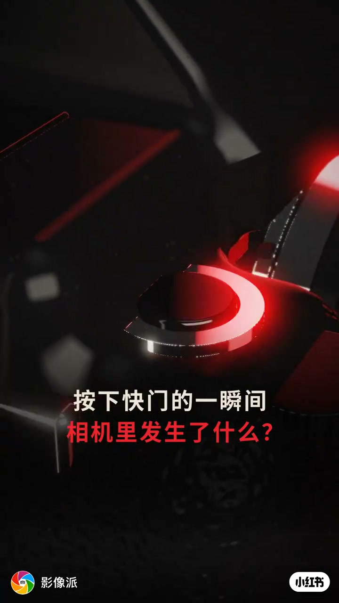
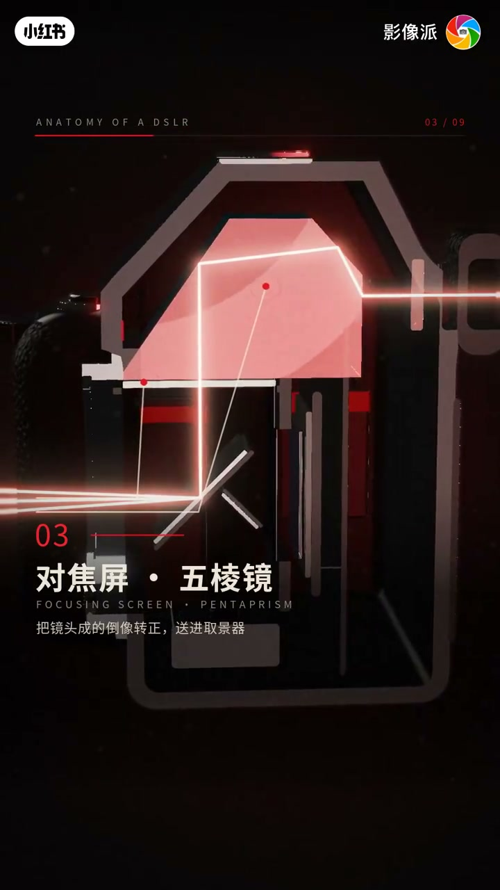
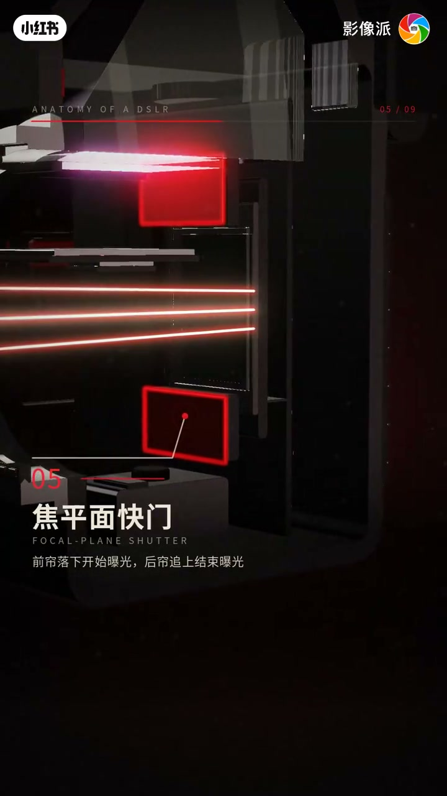
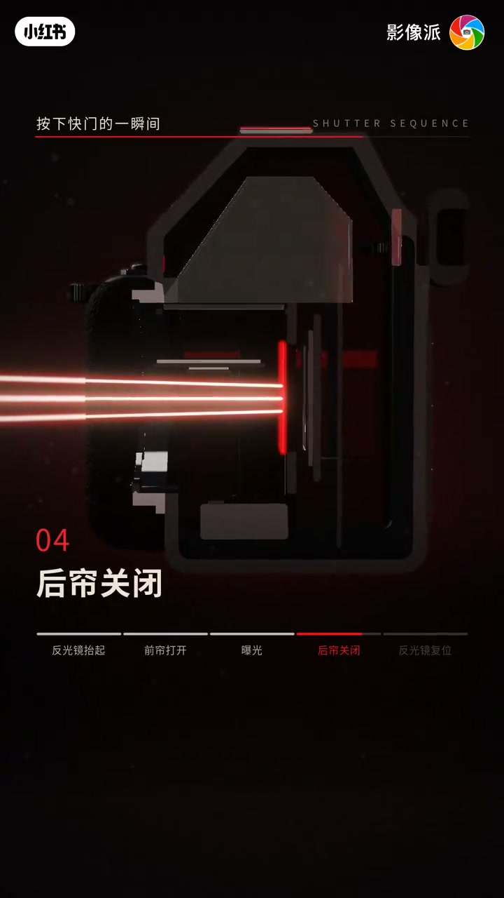

内容要点
「影像派」ANATOMY OF A DSLR 九步解构机身：卡口触点、反光镜、对焦屏五棱镜、副镜相位对焦、焦平面快门、全画幅 CMOS、图像处理器、电池存储卡、取景器屏幕拨盘；并演示快门序列（反光镜抬起→前帘→曝光→后帘→复位）。口播几乎被 BGM 覆盖，依据画面字幕重建。
知识结构
[00:00→00:18]
光路上行
卡口卡住镜头并通信供电；45° 反光镜把光送进取景器；五棱镜把倒像转正。
[00:18→00:42]
对焦曝光记录
副镜分束做相位对焦；前后帘焦平面快门；36×24mm CMOS 把光变电信号；处理器写成照片。
[00:42→01:02]
人机与快门序
取景器+LCD+拨盘；快门序列五步演示。
总结
按下快门的一瞬间：镜子让路、前后帘开合、传感器与处理器把光写成文件——单反是光路机器，不只是「一个按键」。
00:00-00:30取景光路：卡口、反光镜、五棱镜与副镜
开场：「按下快门的一瞬间，相机里发生了什么？」01 卡口·触点：卡住镜头，触点通信供电。02 反光镜 45° 斜放，光向上反射。03 对焦屏·五棱镜：倒像转正送进取景器。04 副反光镜·对焦模块：主镜中部半透，分束向下做相位对焦。

[00:03] 标题：按下快门的一瞬间相机里发生了什么
Title: what happens inside the camera the instant you press the shutter

[00:18] 03 对焦屏·五棱镜：倒像转正进取景器
03 Focusing screen · pentaprism: inverted image flipped upright into the viewfinder
00:30-01:02曝光与写入：快门、传感器、处理器与人机界面
05 焦平面快门：前帘落下开始曝光，后帘追上结束。06 图像传感器 CMOS 36×24mm：像素把光变成电信号。07 图像处理器：电信号算成照片写入卡。08 电池在手柄、存储卡在侧门。09 取景器·屏幕·拨盘：眼贴取景器，手指管拨盘。
片尾快门序列：反光镜抬起→前帘打开→曝光→后帘关闭→反光镜复位。脚注：Whisper 仅识出李宗盛作词作曲等，章节依据画面字幕重建。

[00:26] 05 焦平面快门：前帘开、后帘关
05 Focal-plane shutter: front curtain opens, rear curtain closes

[00:50] 快门序列高亮：后帘关闭一步
Shutter sequence highlight: the rear-curtain close step
完整转录（4段）
以下文本由 Whisper medium 模型自动转录，可能存在少量识别误差，已尽可能修正。
作词作曲 李宗盛
作词 李宗盛
作曲 李宗盛
Zither Harp